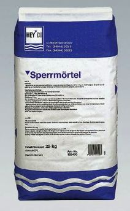
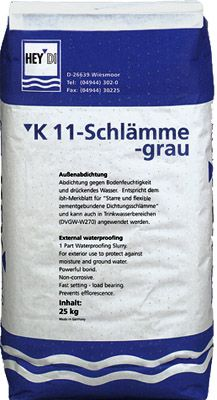
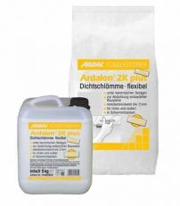
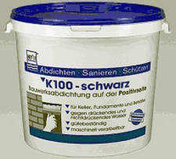

Уплотнительный раствор
Уплотнительный раствор - полимерно-модифицированный уплотнительный раствор универсального применения. 
Уплотнительный раствор - полимерно-модифицированный уплотнительный раствор универсального применения. 
Серый шлам К11 - однокомпонентная гидроизоляционная смесь (минеральный шлам).
Серый шлам К11 для долговременной гидроизоляции бетонных конструкций, гидроизоляции кирпича и цементной штукатурки от влажности грунта и воды под давлением.

Специальный шлам - шлам на цементной основе с неорганическими добавками.
 Специальный шлам обеспечивает защиту от воды, воздействующей на строительную конструкцию без давления и под высоким давлением. Является одним из компонентов Специальной системы Аквастопп.
Специальный шлам обеспечивает защиту от воды, воздействующей на строительную конструкцию без давления и под высоким давлением. Является одним из компонентов Специальной системы Аквастопп.
Ардалон 2К плюс - двухкомпонентный эластичный гидроизоляционный раствор с очень хорошей прочностью сцепления с минеральными основаниями.

Ардалон 2К плюс предназначен для защиты от влажности грунта и напорной воды, создания гидроизоляционного слоя под плиткой и керамическими покрытиями на полу и стенах во влажных помещениях, ванных, на балконах и террасах, в чашах плавательных бассейнов, подземных сооружениях и в других строительных объектах, подверженных образованию трещин, высокой водной нагрузке при эксплуатации и очистке.
Мастика К100 битумная - однокомпонентная битумная мастика для гидроизоляции на латекс-битумной основе, не содержащая растворителей и наполнителей.Битумная мастика для гидроизоляции К100 предназначена для надёжной и долгосрочной защиты соприкасающихся с землёй частей здания от грунтовой влаги и напорной воды на стороне, обращенной к воде. Мастика применяется для создания эластичной и долгосрочной гидроизоляции на устойчивых основах из бетона, газобетона, штукатурки и каменной кладки, гидроизоляции подвалов, фундаментов и резервуаров.